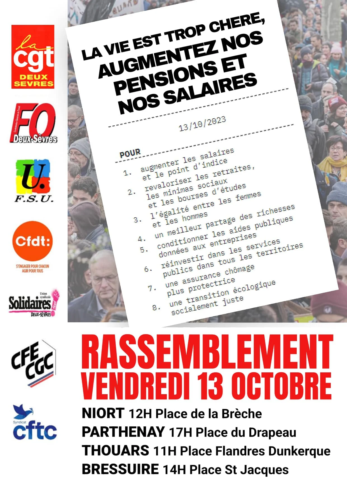

Appel à la mobilisation
Le 13 octobre, les syndicats mobilisés pour les salaires et les pensions
Date indiquée par Facebook · 12 octobre 2023
Repères éditoriaux
Nous avons appelé à rejoindre les mobilisations du 13 octobre. L’affiche intersyndicale précise les rendez-vous à Niort, Parthenay, Thouars et Bressuire.
Texte conservé avec la publication
Le PCF appelle à se mobiliser le vendredi 13 octobre à l'occasion de la journée d'action nationale et européenne contre la vie chère en répondant à l'appel intersyndical.
Quatre lieux de rassemblement dans les Deux-Sèvres.

Sources
Archive rouge · export Facebook · AR-0002-FB-01567
À lire aussi · À Bressuire, la mobilisation du 13 octobre en vidéo